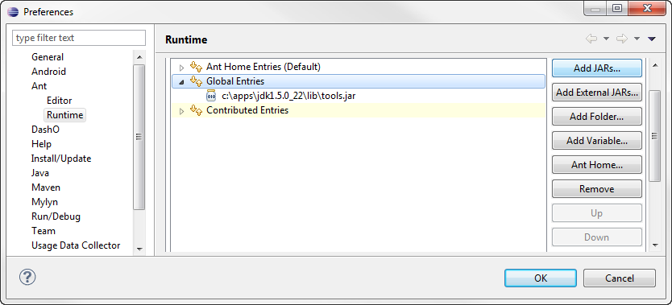
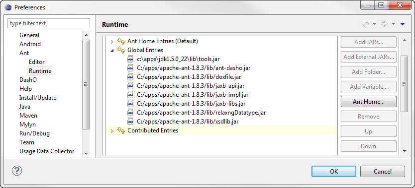

DashO's ant tasks are in ant-dasho.jar. This jar and some additional support jars need to be copied into Ant's lib directory. An optional configuration step can be performed before this to make the use of DashO's tasks easier.
Note: When you update DashO, you need to also update the jars used by ant.
Configuring dasho.ant.runtime.properties
As discussed in Setting DashO Home the Ant tasks need to know where DashO is installed. One of the options is to set the value in a properties file stored in ant-dasho.jar. Setting the home value this way lets buildfiles run with minimum configuration. It is not required that this file be configured as there are other ways to specify where DashO is installed.
To see the values that the task will use you can run the antconfig script:
C:>antconfig show dasho.home=C:/Program Files/PreEmptive Solutions/DashO 6.0 dasho.fullVersion=6.0.1 dasho.version=6.0
If the value returned for dasho.home is correct your configuration is complete. If you have installed DashO in another directory you will need to specify a new location. The simplist method is to let the value be configured automatically:
C:>antconfig dasho.home=C:\Documents and Settings\lazardo\DashO 6.0
If the value cannot be determined automatically, you can specify it:
C:>antconfig C:\Documents and Settings\lazardo\dasho\DashO 6.0 does not contain DashOPro.jar C:>antconfig "C:\Program Files\DashO 6.0" dasho.home=C:\Program Files\DashO 6.0
Note that paths that contain spaces must be quoted.
Where to install the tasks
Ant can find tasks stored in one of two locations:
- ant.lib directory - tasks placed in this directory are accessible to all users of Ant.
- USER_HOME/.ant/lib directory - tasks found here are available to a single user.
You can determine these locations by running ant for the command line - be prepared for lots of output!
C:>ant -diagnostics ... ------------------------------------------- ANT_HOME/lib jar listing ------------------------------------------- ant.home: C:\Program Files\apache-ant-1.7.0 ... ------------------------------------------- USER_HOME/.ant/lib jar listing ------------------------------------------- user.home: C:\Documents and Settings\lazardo ...
This means that the two choices for installing the task are C:\Program Files\apache-ant-1.7.0 and C:\Documents and Settings\lazardo\.ant.
Installing the tasks
Once you have choosen the installation directory you can use the antinstall script to install the ant tasks:
C:>antinstall "C:\Documents and Settings\lazardo\.ant" Creating C:\Documents and Settings\lazardo\.ant Creating C:\Documents and Settings\lazardo\.ant\lib Copying ant-dasho.jar to C:\Documents and Settings\lazardo\.ant\lib Copying lib\doxfile.jar to C:\Documents and Settings\lazardo\.ant\lib Copying lib\jaxb-api.jar to C:\Documents and Settings\lazardo\.ant\lib Copying lib\jaxb-impl.jar to C:\Documents and Settings\lazardo\.ant\lib Copying lib\jaxb-libs.jar to C:\Documents and Settings\lazardo\.ant\lib Copying lib\relaxngDatatype.jar to C:\Documents and Settings\lazardo\.ant\lib Copying lib\xsdlib.jar to C:\Documents and Settings\lazardo\.ant\lib Installation complete
Note that paths that contain spaces must be quoted.
Installing the task into Eclipse
If you chose to install the ant tasks in your USER_HOME/.ant your configuration is complete - Eclipse will discover the jars stored here and add them to classpath of its internal version of Ant. Otherwise you need to tell Eclipse to add these jars to Ant's classpath. Do do this open Eclipse's Preferences dialog using Window > Preferences… from the menu bar. Use the navigation tree to go to Ant > Runtime. The dialog will look something like this:
Select Global Entries and then click on Add External Jars…. Use the file selector to go to where ant has been installed. Add the following jars from the lib directory:
- ant-dasho.jar
- doxfile.jar
- jaxb-api.jar
- jaxb-impl.jar
- jaxb-libs.jar
- relaxngDatatype.jar
- xsdlib.jar
The resulting dialog will look something like this:
Click on OK to save you changes, and Eclipse configuration is complete.